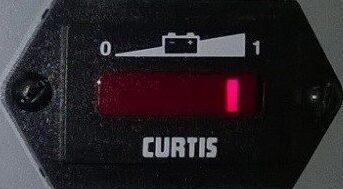
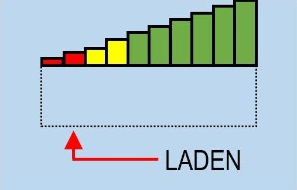

Visuelles Management – Praxisbeispiel aus dem Karosseriebau
Visuelles Management ist den meisten Unternehmern ein vertrauter Begriff. Während wenige sich noch mit der Umsetzung dieses Lean-Ansatzes schwertun, sind die anderen sich seiner potentiellen Vorteile bewusst. Durch optische Reize erkennen die Mitarbeiter/-innen (MA) im Büro, in der Produktion oder im Lager schneller, wo bestimmte Materialien und Informationen zu finden sind, wie die beste Route beim Kommissionieren ist, oder welchen Bauplatz sie grade nicht betreten sollten. Dabei minimiert visuelles Management vor allem vier der acht Verschwendungsarten: Warten, Transport, Bewegung und Defekte. Erfahren Sie, wie durch den Einsatz von visuellem Management und minimalen Investitionen ein Problem im Karosseriebau signifikant reduziert werden konnte.
Die Problemstellung
Im Jahr 2018 möchte ein großer deutscher Automobilkonzern seine MA an bestimmten Bauplätzen im Karosseriebau ergonomisch entlasten. Dafür besorgt er insgesamt 28 elektronisch angetriebene Trolleys (E-Trolleys). Diese unterstützen die MA bei der Handhabung schwerer Lasten am Bauplatz. Was mit einer guten Idee anfängt, entwickelt sich allerdings nach kurzer Zeit zu einer größer werdenden Herausforderung: Die Verfügbarkeit der E-Trolleys liegt mit ca. 50 % (15/28) weit unter den Ambitionen des Vorhabens.
Zunächst liegt der Verdacht bei einem Fehlkauf und unsere ersten Lösungsansätze schwanken zwischen einem Wechsel zu einem anderen Hersteller und teuren Modifikationen der E-Trolleys. Bevor wir jedoch vorschnell handeln, analysieren wir die Situation ganz in Ruhe. Wir beobachten mehrere Tage einige zufällig ausgewählte E-Trolleys im Einsatz. Zusätzlich führen wir Gespräche mit an den Prozessen beteiligten MA. Die Analysen werfen ein gänzlich anderes Bild auf die Situation: Die E-Trolleys funktionieren, entgegen der ersten Vermutungen, einwandfrei. Es ergeben sich folgende Ursachen für die geringe Verfügbarkeit:
- Die herstellerseitig mitgelieferte Bedienungsanleitung ist zwar korrekt, jedoch missverständlich formuliert
- Missverständliche Akkuanzeige
- Tiefentladene Akkus lassen sich nicht an einer normalen Ladestation aufladen
- Insgesamt zu wenig normale Ladestationen
- Handhabung: Notaus-Schalter
- Die E-Trolleys gehen verloren (keine klare Zuordnung)
Die Problem-Kaskade (ohne visuelles Management)
Beispielhaft sei eine daraus resultierende Kaskade von Problemen sowie deren Lösung dargestellt: Wie in folgender Abbildung zu erkennen, zeigt die Akkuanzeige sequenziell mit einem von zehn Feldern den Ladestand des Akkus an. Auf der Abbildung ist der Akku zu ca. 90 % aufgeladen. Es geht jedoch nicht daraus hervor, wann geladen werden muss. Intuitiv würde ein MA den E-Trolley für die Ladung melden, wenn das Feld ganz links leuchtet.

Die Analysen zeigen jedoch, dass das zu spät und der Akku damit tiefentladen ist.Folglich kommt es, aufgrund der mangelnden Ladestationen, zu einem längeren Ausfall. Um das zu verzögern wird der MA darauf achten, dass der Akku möglichst lange durchhält. Nachdem er den E-Trolley abstellt, leuchtet die Akkuanzeige jedoch noch wenige Sekunden nach, bevor der E-Trolley sich in Standby setzt. Die MA können das nicht wissen und betätigen, aus Sorge vor einer schnellen Entladung, den Notaus-Schalter. Für eine erneute Benutzung des elektronischen Antriebs muss der Notaus-Schalter allerdings wieder herausgezogen werden.
Ein weiterer MA, welcher nichts von dem betätigten Notaus weiß, da es schwer zu erkennen ist, geht von einem defekten E-Trolley aus und leitet ihn fälschlicherweise zur Instandhaltung weiter. Die daraus weiter sinkende Verfügbarkeit verstärkt die Sorge der MA und sie werden zukünftig mit höherer Wahrscheinlichkeit den Notaus-Schalter betätigen.
Lösung durch visuelles Management
Das Durchbrechen der Problem-Kaskade ist so genial wie, bzw. weil einfach. Wir bringen einen Aufkleber um die Akkuanzeige an.

Die MA wissen nun, dass der E-Trolley bei einer Aufladung von 20 % den Ladezyklus durchlaufen muss. Einer Tiefentladung wird damit vorgebeugt und die Akkus können über die normalen Ladegeräte geladen werden.
Weitere Maßnahmen sind Warnhinweise zum Überprüfen des Notaus-Schalters, eine umfassende Fehleranweisung sowie eine klar geregelte Zuordnung zu Bauplätzen über eine Nummerierung. Zusätzlich entwickeln wir ein Ladekonzept mit mehr Ladegeräten und visualisieren dieses auf den E-Trolleys. Aus Komplexitätsgründen wird an dieser Stelle auf eine detailliertere Beschreibung dieser Maßnahmen verzichtet.
Mit den genannten Maßnahmen konnten wir die Verfügbarkeit auf durchschnittlich 90 % (26/28) steigern. Die Zufriedenheit der MA stieg durch die Gewichtsentlastung und der nun klaren Handhabung. Gleichzeitig mussten wir nur geringe Ressourcen für die Lösung des Problems aufwenden. Für mich von noch größerer Bedeutung als die Erfolge des Projekts, waren meine Erkenntnisse um die Wichtigkeit des visuellen Managements und des Lean Managements im Allgemeinen.
Weitere Artikel

Regeln für KI im Office
ChatGPT & Co haben sich schnell in die Herzen und Alltag von vielen Menschen im Berufs- und Privatleben gespielt. Diese neuen Werkzeuge eröffnen uns viele Chancen, nicht nur effizienter zu werden, sondern auch kreativer. Aber …

KI als Copilot für die Assistenz
KI in Form von ChatGPT & Co sind hervorragende neue Werkzeuge im Office-Alltag, um produktiver und ja, auch kreativer, zu werden. Neugier statt Angst ist angezeigt im Umgang mit diesen Werkzeugen, die wie andere Werkzeuge auch …